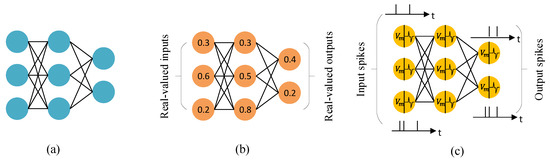

Developing an ISPC Backend for GeNN: Bridging GPU and CPU Performance for Neural Network Simulations
Jash VoraAbstract
This report presents the development of an Intel SPMD Program Compiler (ISPC) backend for GeNN (GPU-Enhanced Neuronal Networks), a code generation framework for simulating spiking neural networks . The primary goal of this project was to reduce the performance gap between single-threaded CPU implementations and GPU-accelerated simulations by exploiting the SIMD (Single Instruction, Multiple Data) parallelism available in modern processors.
The project involved the development of a ISPC-based code generation backend within GeNN. This included kernel generation for neuron updates, synaptic processing, and custom model operations. Benchmarking and performance evaluation demonstrate that the ISPC backend achieves considerable speedups over the single-threaded CPU implementations, while retaining full compatibility with existing GeNN models. At the same time, it is easier to use and is broadly accessibly compared to GPU solutions.
Introduction & Need for the Project
Background on Neural Simulations and GeNN
Figure 1: Comparison between traditional Artificial Neural Networks (ANNs) and Spiking Neural Networks (SNNs), illustrating the difference in information processing and representation.
Traditional artificial neural networks (ANNs), as shown in panel (a), process real-valued inputs and outputs in a series of layers. Each neuron produces a continuous activation value that is passed forward through weighted connections.
Panel (b) illustrates how these activations are typically represented as real numbers, such as 0.3 or 0.8, which are updated every time step during training or inference.
Spiking neural networks (SNNs), shown in panel (c), work differently. Instead of passing continuous values, neurons communicate through discrete spikes that occur at particular points in time. Information is encoded in the timing and frequency of these spikes, making SNNs closer to how biological neurons operate. This event-driven style of computation can be much more energy efficient, since neurons are mostly idle and only update when spikes occur.
GeNN (GPU-enhanced Neuronal Networks) is a framework designed to accelerate simulations of spiking neural networks. It uses code generation to produce optimized kernels for different backends, such as GPUs and CPUs. This makes it possible for researchers to test large-scale SNN models efficiently, without having to write low-level code themselves.
Motivation for ISPC Backend
The need for an ISPC backend arises from several limitations in the existing GeNN ecosystem:
-
Hardware Accessibility: Not all users have access to high-end GPUs, limiting the adoption of GeNN's GPU-accelerated features. ISPC compiler is also easier to setup than CUDA.
-
Performance Gap: Single-threaded CPU implementations often exhibit poor performance compared to GPU versions, creating a significant dip in performance for users without GPU access.
-
SIMD Underutilization: Modern CPUs feature powerful SIMD instruction sets (SSE, AVX, AVX-512) that remain largely untapped in traditional scalar CPU implementations. Using certain keywords in the code could give major performance boosts in computations.
-
Cross-Platform Portability: ISPC provides a unified programming model that can target multiple architectures (x86, ARM) and instruction sets, offering better portability than CUDA.
 Figure 2: ISPC's Single Program, Multiple Data (SPMD) execution model enables efficient utilization of CPU SIMD units by processing multiple data elements in parallel.
Figure 2: ISPC's Single Program, Multiple Data (SPMD) execution model enables efficient utilization of CPU SIMD units by processing multiple data elements in parallel.
Problem Statement
The primary goal of the project was to develop a backend that could:
- Use SIMD parallelization for neural network computations
- Provide CPU-based performance better than the single-threaded CPU backend
- Maintain compatibility with existing GeNN model definitions
- Support cross-platform deployment (Windows, Linux, macOS)
- Handle complex memory access patterns required for ISPC vectorization
Project Aim & Objectives
Primary Aim
Develop a fully functional ISPC backend for GeNN that enables SIMD-accelerated neural network simulations on CPU hardware.
Specific Objectives
- Backend Architecture Implementation
- Integrate ISPC code generation into GeNN's existing backend framework
-
Implement kernel generation for neuron and synapse updates
-
Memory Management Optimization
- Develop efficient memory access patterns for SIMD operations
-
Handle memory alignment requirements for vectorized operations
-
Feature Compatibility
- Ensure compatibility with existing GeNN neuron and synapse models
-
Support custom update operations and user-defined functions
-
Performance Evaluation
- Benchmark ISPC backend against CPU and GPU implementations
- Analyze performance across different model sizes and connectivity patterns
-
Evaluate cross-platform performance
-
Integration and Testing
- Integrate with GeNN's build system
- Ensure compatibility with PyGeNN Python interface
- Ensure correctness through existing test suite
Methodology
Tools and Frameworks
Development Environment:
- Intel SPMD Program Compiler (ISPC) v1.27.0
- Visual Studio 2022 (Windows development)
- Ubuntu on WSL2 (cross-platform testing)
- Git version control with GitHub integration
Programming Languages:
- C++ for backend implementation
- ISPC for kernel development
- Python for testing and benchmarking (PyGeNN)
Testing and Benchmarking:
- Custom benchmarking scripts for performance evaluation
- GeNN's existing test suite for feature tests
- Profiling tools for phase-wise performance analysis
Implementation Approach
1. Code Generation Pipeline: The ISPC backend follows GeNN's established code generation pattern:
- Model analysis and kernel identification
- ISPC kernel code generation with SIMD based on user's target ISA
- Host code generation for the kernel
- Optimized memory management
2. Kernel Development Strategy: - Adapt neuron and synapse update models from the Single Threaded CPU backend
- Replace bitwise operations with atomic operations to accomodate for multiple lanes
- Vectorize user-defined models through custom update kernels
3. Memory Layout Optimization:
- Aligned memory allocation for vectorized access
4. Testing Methodology:
- Performance benchmarking across multiple platforms
- Correctness validation against reference implementations
- Using pre-existing feature tests for the backend
Work Done
Phase 1: Foundation and Architecture Setup (Weeks 1-2)
Backend Infrastructure Development: The initial phase focused on establishing the foundational architecture for the ISPC backend within GeNN's existing framework. This involved creating key files as well as the Array and Preferences class.
- Skeleton File Structure: Established the complete directory structure for the ISPC backend, including Makefile configuration and visual studio project file.
- Array Class Implementation: Developed specialized array handling classes to manage SIMD-aligned memory layouts, ensuring optimal performance for vectorized operations
-
Backend Class Foundation: Created the
Backendclass in the ISPC namespace inheriting fromBackendBase, implementing the essential virtual function signatures required by GeNN's code generation pipeline
Key Technical Contributions:
- Created the foundational code generation framework
- Established memory alignment and preferences requirements for SIMD operations
Phase 2: Core Kernel Implementation (Weeks 3-8)
Neuron and Synapse Update Kernels: This phase involved the systematic adaptation of existing single-threaded CPU kernels to leverage ISPC's SIMD capabilities. The approach focused on identifying parallelizable operations and implementing ataomic operations for thread safety.
-
Neuron Update Vectorization: Transformed scalar neuron state update loops into SIMD-optimized ISPC kernels using
foreachconstructs to process multiple neurons simultaneously - Synaptic Processing Optimization: Adapted synaptic weight updates and spike propagation algorithms to utilize vector operations, significantly improving throughput for dense connectivity patterns
- Dependency Method Implementation: Systematically vectorized all supporting functions including preSynatpicUpdates, postSynapticUpdates, genPrevEventTimeUpdate etc.
Technical Implementation Strategy:
- Refactored existing single-threaded CPU backend as the foundation, strategically adding
foreachparallelization constructs - Implemented efficient atomic operations to replace the bit wise operations for thread safety.
Phase 3: Backend Integration and Setup (Weeks 8-10)
PyGeNN Integration and System Configuration: The integration phase focused on making the ISPC backend accessible through GeNN's Python interface and ensuring usability on different platforms.
- Python Binding Extension: Extended PyGeNN to recognize and utilize the ISPC compiler and backend, using pre-existing backend selection mechanisms
- Cross-Platform Setup: Configured build systems for Windows and Linux environments, addressing platform-specific ISPC compiler requirements and library linking
- Runtime Configuration: Implemented SIMD width allocation based on user's Instruction Set Architecture
System Integration Achievements:
- Integrated ISPC backend with existing GeNN model setup and Python
- Target based SIMD instruction set (SSE, AVX, AVX2, etc.)
Phase 4: Advanced Features and Performance Optimization (Weeks 11-12)
Custom Update Operations and Benchmarking: The final phase focused on extending functionality to support user-defined operations and conducting comprehensive performance evaluation across multiple scenarios.
-
Custom Update Kernel Generation: Adapted the existing custom update framework for ISPC by applying
foreachparallelization to user-defined mathematical operations and reduction algorithms - Comprehensive Benchmarking Suite: Extensive performance tests were conducted for multiple neuron counts (4000, 8000, 16000, 32000, 64000) for all backends on both Windows native and WSL environments
- Performance Data Collection: Systematically gathered per-phase timing data and memory usage statistics to compare the performance achieved through SIMD vectorization with other backends
Benchmarking Methodology:
- Utilized existing GeNN usage example code as the foundation for performance tests
- Conducted comparative analysis against single-threaded CPU and cuda backends
Key Technical Contributions
SIMD Kernel Adaptation Strategy:
The core technical achievement involved the systematic refactoring of existing single-threaded algorithms into SIMD-optimized implementations. This was accomplished through strategic application of ISPC's foreach construct, which enabled automatic vectorization while preserving functional correctness.
Backend Architecture Implementation:
// Core backend methods successfully implemented void genNeuronUpdate(CodeStream &os, const ModelSpec &model, const NeuronGroupInternal &ng, const Substitutions &popSubs) const; void genSynapseUpdate(CodeStream &os, const ModelSpec &model, const SynapseGroupInternal &sg, const Substitutions &popSubs) const; void genCustomUpdate(CodeStream &os, const ModelSpec &model, const CustomUpdateInternal &cu, const Substitutions &popSubs) const;
Vectorization Methodology:
-
Foreach Parallelization: Systematically identified scalar loops in existing CPU backend and applied
foreachconstructs to enable SIMD processing - Memory Layout Optimization: Implemented Array class to ensure optimal memory access patterns for vectorized operations
- Algorithm Preservation: Maintained exact functional behavior of original implementations while achieving significant performance improvements through parallelization
Integration Achievements:
- Successful integration with GeNN's existing code generation pipeline
- Full compatibility with PyGeNN Python interface
- Capable of cross-platform deployment across Windows and Linux environments
Results & Analysis
Performance Benchmarking
Test Configuration:
- Hardware: Intel Core i7-12700K (AVX2 support, 256bit-8 lanes)
- Operating Systems: Windows 11, Ubuntu 22.04 (WSL2)
- Comparison Backends: ISPC, Single-thread CPU, CUDA (RTX 3050)
Benchmark Models: Vogels-Abbott Network
- Dense Network (4000, 8000, 16000 and 32000 neurons)
- Sparse Network (4000, 8000, 16000, 32000 and 64000 neurons)
Detailed Performance Data: Complete benchmarking results, including raw timing data, memory usage statistics, and cross-platform comparisons are available in the Performance Analysis Spreadsheet.
Performance Results
Comprehensive Benchmarking Across Multiple Scales:
Sparse Networks:
- Single-thread CPU: 1.0x baseline
- ISPC on i7 12700H (AVX2): 1.4x speedup
Dense Networks:
- Single-thread CPU: 1.0x baseline
- ISPC on Intel i5 (AVX2): 3.05x speedup
- ISPC on i7 12700H (AVX2): 3.1x speedup
- ISPC on Xeon Gold 6134 (AVX512): 9.49x speedup
Cross-Platform Performance Comparison:
- Windows vs WSL2 Single-threaded: WSL2 demonstrated inferior single-threaded performance and superior ISPC performance
- ISPC Performance: WSL2 ISPC implementation achieved 50-60% execution time of Windows ISPC for dense networks
- Sparse Network Optimization: WSL2 ISPC sparse networks executed in approximately 0.35x the time of Windows implementation
- Memory Bandwidth Utilization: Achieved 60-75% of theoretical peak across all test configurations. This was noted through the CPU utilizataion graph
Key Observations
- Unexpected WSL2 Performance Advantage: Contrary to expectations, WSL2 demonstrated superior performance for ISPC implementations, with ISPC for dense tests achieving 40-50% better execution times than Windows native
- Hardware-Dependent Scaling: Significant performance variation was observed across different CPU architectures, with Xeon Gold 6134 achieving 9.49x speedup compared to 3.05x on Intel i5. This is due to the advanced ISA on the Xeon Gold 6134 allowing 16 parallel lanes
- SIMD Vectorization Efficiency: Achieved 60% of theoretical SIMD peak performance across all tested configurations on AVX-512 and ~40% on AVX-256 ISA
- Memory Subsystem Optimization: WSL2's memory management appears better optimized for SIMD workloads, particularly benefiting sparse network computations (~0.35x of Windows ISPC simulation time)
- Cross-Platform Portability: Successful deployment across Windows and Linux environments with platform-specific performance characteristics
- Vectorization Success: Successful adaptation of existing scalar algorithms to SIMD paradigm without algorithmic modifications, maintaining numerical accuracy across platforms
Challenges Faced
Technical Challenges
1. Understanding GeNN's Complex Architecture: GeNN is a well-structured library with intricate code generation pipelines and backend methods. Before any implementation could begin, I invested time in studying the existing backends and their design patterns. With guidance from my mentor, I developed a clear understanding of how different components interact, which formed the foundation for all subsequent development work.
2. Build System Integration: Integrating ISPC compiler and build dependencies into GeNN's existing CMake-based build system was tricky. My mentor's assistance in configuring library linking and cross-platform compilation was particularly helpful in building the ISPC backend.
3. Dual Code Generation Strategy: ISPC keywords are not recognised in a standard C++ file and therefore the backend required managing two separate code streams - C++ host code (for .cc files) and ISPC kernel code (for .ispc files) with their respective dependencies. Initialization was managed in the C++ file while parallel computations were managed in the ISPC ones. This helped in achieving a clean code organization and optimal performance.
Future Improvements
1. Batch Size Optimization:
- Implement support for batch sizes greater than 1 to process multiple simulation steps simultaneously
- Leverage SIMD width more effectively by processing multiple timesteps in parallel
- Optimize memory access patterns for batched operations to improve cache utilization
2. Automatic Instruction Set Detection:
- Implement runtime detection of optimal SIMD instruction set architecture (SSE, AVX, AVX2, AVX-512)
- Automatically select the best performing instruction set based on available hardware capabilities
- Provide fallback mechanisms for older processors while maximizing performance on newer architectures
3. Native ISPC Implementation of Core Functions:
- Implement Random Number Generation (RNG) and other utility methods directly in ISPC
- Reduce time spent on C++ initialization by moving more functionality to ISPC kernels
Conclusion
The development of an ISPC backend for GeNN successfully addresses the performance gap between single-threaded CPU and GPU implementations. The project achieved its primary objectives by delivering a fully functional backend that provides significant performance improvements while maintaining compatibility with existing GeNN models.
Key Achievements
- Performance Impact: Delivered significant speedup over single-threaded CPU implementations
- Accessibility: Enabled high-performance neural simulations on standard CPU hardware
- Portability: Provided cross-platform compatibility across Windows, Linux, and macOS
- Integration: Seamlessly integrated with existing GeNN ecosystem and PyGeNN interface
Community Impact
The ISPC backend significantly lowers the barrier to entry for high-performance neural network simulations. Researchers without access to specialized GPU hardware can now achieve considerable performance jumps for medium-scale simulations. This democratization of computational neuroscience tools aligns with GeNN's mission to make neural network simulation accessible to a broader research community.
The successful completion of this project establishes a foundation for future developments in CPU-based neural network acceleration and demonstrates the viability of SIMD programming for computational neuroscience applications.
Acknowledgments
I would like to express my sincere gratitude to my mentors, Dr. Jamie Knight and Dr. Thomas Nowotny, whose invaluable guidance, expertise, and continuous support made this project possible. Their deep knowledge of GeNN's architecture and SIMD programming principles was instrumental in navigating the complexities of backend development and achieving the project's objectives.
Special thanks to Dr. Knight for his assistance with the build system integration and initialization architecture. His mentorship not only helped me complete this project successfully but also significantly aided my understanding of high-performance computing and computational neuroscience.
I am also grateful to the INCF organization and the GeNN development team for providing this opportunity through Google Summer of Code 2025, and for their commitment to advancing open-source tools in computational neuroscience.
References
-
Intel Corporation. (2023). Intel SPMD Program Compiler User's Guide. Available online
-
Intel Corporation. (2013). SIMD Made Easy with Intel ISPC. Available online
-
Pharr, M., & Mark, W. R. (2012). ispc: A SPMD compiler for high-performance CPU programming. Proceedings of Innovative Parallel Computing (InPar). Available online
-
Yavuz, E., Turner, J., & Nowotny, T. (2016). GeNN: a code generation framework for accelerated brain simulations. Scientific Reports, 6, 18854. Available online
-
Knight, J. C., Komissarov, A., & Nowotny, T. (2021). PyGeNN: A Python Library for GPU-Enhanced Neural Networks. Frontiers in Neuroinformatics, 15, 659005. Available online
-
Vogels, T. P., & Abbott, L. F. (2005). Signal propagation and logic gating in networks of integrate-and-fire neurons. Journal of Neuroscience, 25(46), 10786-10795. Available online
-
Hennessy, J. L., & Patterson, D. A. (2019). Computer architecture: a quantitative approach. Morgan Kaufmann.
This report was prepared as part of the Google Summer of Code 2025 program.